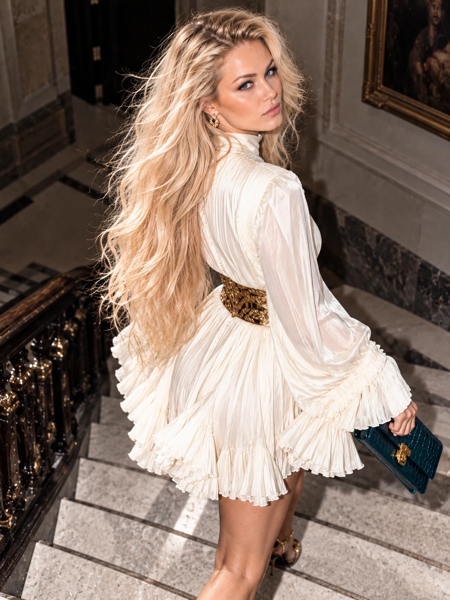
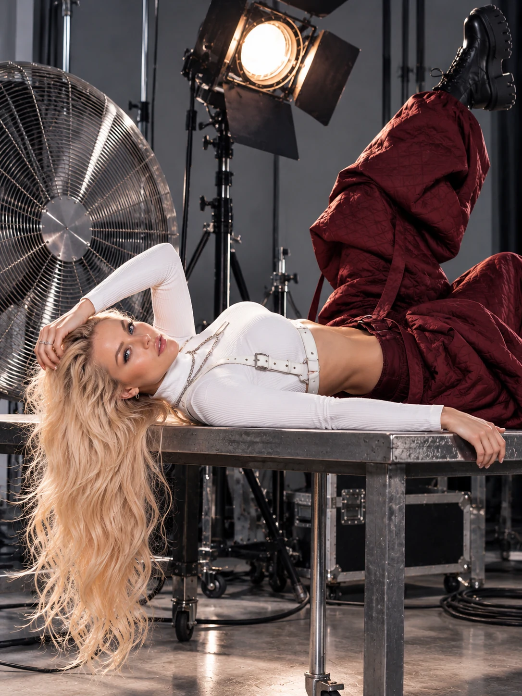
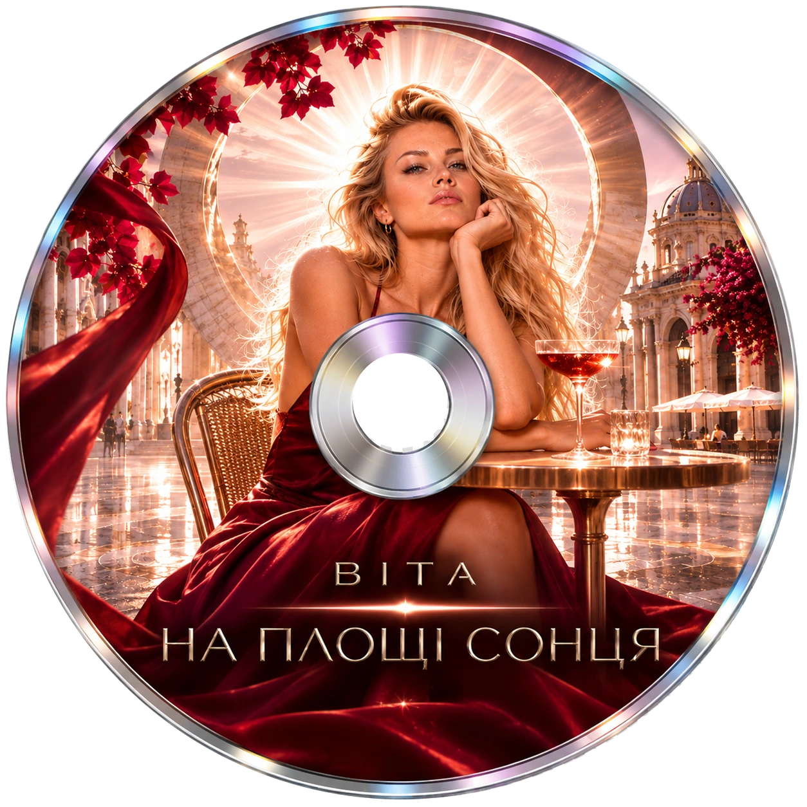
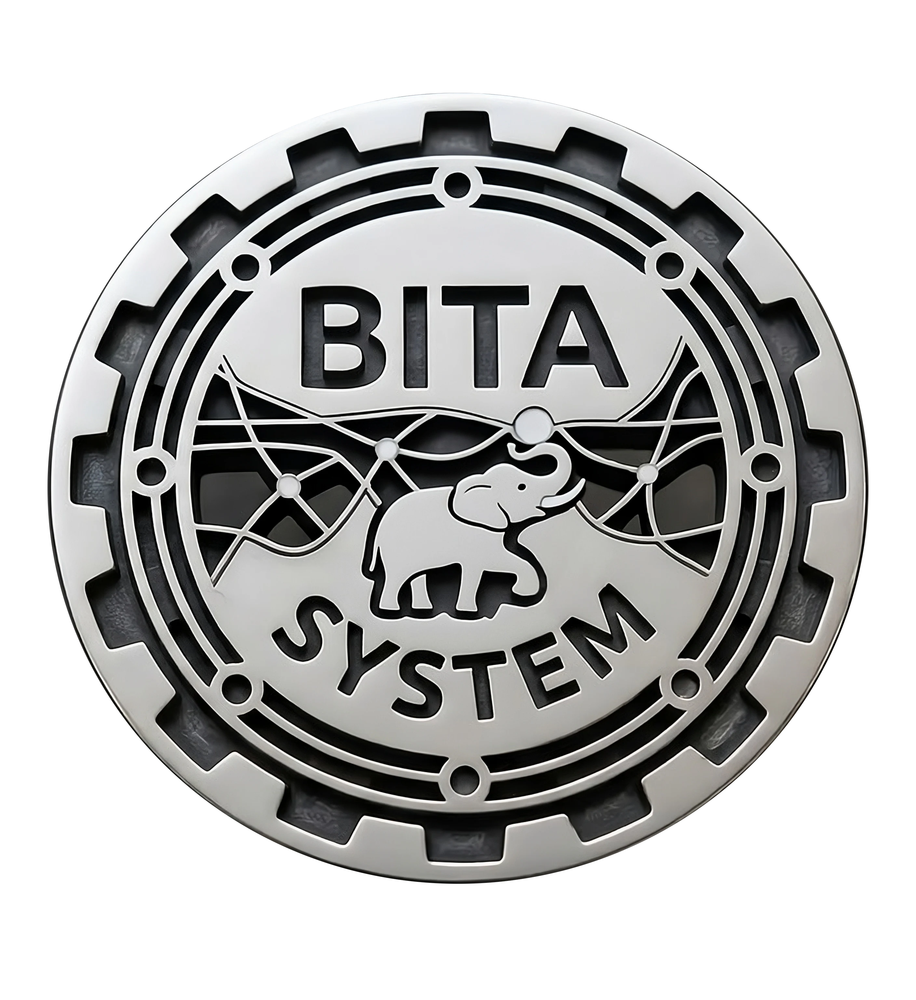

СИСТЕМА ВІТА
ВІТА
Співачка Нової Ери
ВІТА | 224 FM
СпівачкаНової Ери
ВІТА — ЦЕ МАЙБУТНЄ
Воля, Свобода, Простір, Швидкість — ЇЇ ДНК
.webp)
Нічна Розмована Дахуз Вітою
Відчинити двері01
.webp)
F*CK SHOW
з Фростером, Ро́маном та Вітою
Відчинити двері02.webp)
КімнатиВіти
Відчинити двері03
ПРО ВІТУ

ВІТАСпівачка Нової Ери
ВІТА — артистка, чий світ існує на межі музики, кіно та майбутнього.
Її звучання поєднує інтелектуальний денс-поп, синтвейв і сучасний диско-хаус. Візуальна мова ВІТИ — холодне світло, мокрі поверхні, швидкість, міста після дощу й мода без зайвого блиску.
Система Віта збирає пісні, відео, образи й цифрові історії в один безперервний простір.
01 / МУЗИКА
РАДІО ВІТА 224 FM
Її частота 224 FM
Створюй світразом з ВІТОЮCreate a worldtogether with VITA


02 / ВІДЕО
ВІЗУАЛЬНІ СИГНАЛИ
П’ять сцен Системи Віта. Одна історія.
ГАЛЕРЕЯ
Фотоальбоми ВІТИ
ВІТА не уявляє майбутнє. Вона у ньому живе.
.webp)
.webp)
.webp)
.webp)
.webp)
.webp)
03 / СВІТ ВІТИ
СИСТЕМА
СИСТЕМА
ВІТА
Це не декорація довкола музики, а окремий світ, де звук переходить у кадр, кадр — у моду, а мода — у майбутнє.
УВІЙТИ ДО ВІЗУАЛЬНОГО АРХІВУ ↓ВІТА / YOUTUBE
Відеокліпи
VITA SYSTEM / SOUND ARCHIVE
Дискографія ВІТИ
Альбоми та Сингли

СОЦІАЛЬНІ МЕРЕЖІ / 224 FM
СЛІДУЙ ЗА ВІТОЮ
КОНТАКТИ / 224 FM
Для Преси та
НАПИСАТИ ВІТІ ↗
Для Преси та
Радіостанцій
З питань співпраці пишіть ВІТІ в соціальних мережах.
06 / THE BLACK RABBIT SOCIETYДОСТУП ОБМЕЖЕНО
ТИ ЗАЙШОВ ТРОХИ ДАЛІ, НІЖ ПЛАНУВАВ.Деякі двері
Деякі двері
відкриваються не всім.
Знайди чорних кроликів. Вони знають шлях.
VITA / UNCENSORED
АЛЕ ІНОДІ — КЛЮЧІ.
Тут починається
інша сторона
її світу.
АЛЕ ІНОДІ — КЛЮЧІ.
НАЩО
НАТИСНУВ???
НАТИСНУВ???
Віта просила нічого не чіпати…
ПЕРША П’ЯТІРКА / КЛЮЧІ ДО КІМНАТИ00 / 05
Знайди першого. Замок уже чекає.
ПЕРШИЙ ЕТАП
Знайди чорних кроликів на сайті. Натисни на кожного, щоб його силует з’явився тут. Після п’ятої знахідки двері відчиняться.

VITA SYSTEM / 224
ВІТА — простір,у якому ти залипнеш надовго.